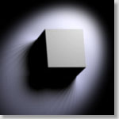

|  |
Illuminating Image-based Objects
,
,
and
, |
Abstract
- In this paper, we present a new scheme of data representation for image-based objects. It allows the illumination to be changed interactively without knowing any geometrical information (e.g. depth or surface normal) of the scene. But the resulting images are physically correct. The scene is first sampled from different view points and under different illuminations. By treating each pixel on the image plane as a surface element, the sampled images are used to measure the apparent BRDF of each surface element. Two compression schemes, spherical harmonics and discrete cosine transform, are proposed to compress the tabular BRDF data. Whenever the user changes the illumination, a certain number of views are reconstructed. The correct user perspective view is then displayed using the standard texture mapping hardware. Hence, the intensity, the type and the number of the light sources can be manipulated interactively.
Remarks
This is an extended version of the paper "Image-based Rendering with Controllable Illumination". New result on compressing pixel BRDFs using DCT have been included. The paper is also restructured to have a better organization.Download Paper
- Acrobat:
illumin3.pdf (size: 613 KB)(with correction done on 23 Sept 1997)
Movies
The following movies demonstrate the reconstructed results of an image-based scene illuminated by different types of light sources.
|
| |||
| Illuminated by a directional source. | Illuminated by a point light source. |